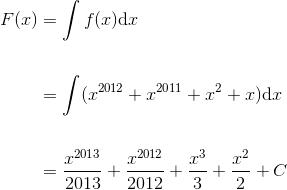
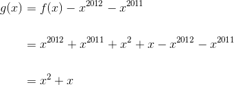
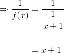

Exerciții și probleme rezolvate pentru profilul științele naturii
- Această problemă a fost dată ca și model de subiect în anul 2012, pentru profilele științele naturii și tehnologic, la subiectul III, exercițiul 2.
Bacalaureat Matematică 2012 | Științele naturii și Tehnologic | Model de subiect | Subiectul III
Se consideră funcțiile  unde
unde 
- Determinați mulțimea primitivelor funcției

- Calculați aria suprafeței cuprinse între graficul funcției
 axa
axa  și dreptele de ecuații
și dreptele de ecuații  și
și 
- Calculați

- Calculăm


Mulțimea primitivelor funcției  este dată de:
este dată de:

- Calculăm


Calculăm aria suprafeței:

- Calculăm


Calculăm


- Această problemă a fost dată în sesiunea specială a anului 2012, pentru profilele științele naturii și tehnologic, la subiectul III, exercițiul 2.
Bacalaureat Matematică 2012 | Științele naturii și Tehnologic | Sesiunea specială | Subiectul III
Se consideră funcția  ,
,  .
.
- Determinați primitiva
 a funcției
a funcției  , care verifică relația
, care verifică relația  .
. - Calculați
 .
. - Calculați volumul corpului obținut prin rotația, în jurul axei
 , a graficului funcției
, a graficului funcției ![g:[1,2]\to\mathbb{R}](https://media.liceunet.ro/files/webbooks/images/280/equations/TNqOovUMtYb4__6WQYZpTA==.gif) ,
,  .
.
- Aflăm primitiva funcției astfel:


Avem . Calculăm 
Avem primitiva , 
- Calculăm .
![\begin{align*} \int_{0}^{1}\displaystyle\frac{f(x)}{x+1}&=\int_{0}^{1}\displaystyle\frac{x^{2012}+x^{2011}+x^2+x}{x+1}\mathrm{d}x\\\\&= \int_{0}^{1} \displaystyle\frac{x^{2011}(x+1)+x(x+1)}{x+1}\mathrm{d}x \\\\&= \int_{0}^{1}\displaystyle\frac{(x^{2011}+x)(x+1)}{x+1}\mathrm{d}x \\\\&=\int_{0}^{1}(x^{2011}+x)\mathrm{d}x\\\\&= \left(\displaystyle\frac{x^{2012}}{2012}+\displaystyle\frac{x^2}{2}\right)\Big|_0^1 \\\\&= \displaystyle\frac{1}{2012}+\displaystyle\frac{1}{2}\\\\&= \displaystyle\frac{1+1006\cdot1}{2012} \\\\&= \displaystyle\frac{1007}{2012} \end{align*}](../../media/webbooks/404/2811/images/equations/wdgb_eognwzow66ey_56gq==.gif)

- Calculăm
 .
.

![\begin{align*} \Leftrightarrow g(x)&= x^2+x, \ \forall\ x\in [1,2]. \end{align*}](https://media.liceunet.ro/files/webbooks/images/280/equations/fRhWPZ7SwzuFhHVgS7Khjg==.gif)
Calculăm volumul corpului astfel:
![\begin{align*} &V=\pi \int_{1}^{2}g^2(x)\mathrm{d}x\\\\ &= \pi \int_{1}^{2}(x^2+x)^2\mathrm{d}x\\\\ &=\pi \int_{1}^{2}\Big((x^2)^2+2\cdot x^2\cdot x+x^2\Big)^2\mathrm{d}x\\\\ &=\pi \int_{1}^{2}(x^4+2x^3+x^2)\mathrm{d}x \\\\ &= \pi \left(\displaystyle\frac{x^5}{5}+2\cdot\displaystyle\frac{x^4}{4}+\displaystyle\frac{x^3}{3}\right)\Big|_1^2\\ \\&=\pi \left(\displaystyle\frac{2^5}{5}+2\cdot\displaystyle\frac{2^4}{4}+\displaystyle\frac{2^3}{3}\right)-\pi \left(\displaystyle\frac{1^5}{5}+2\cdot\displaystyle\frac{1^4}{4}+\displaystyle\frac{1^3}{3}\right)\\\\ &= \pi \left(\displaystyle\frac{32}{5}+\displaystyle\frac{16}{2}+\displaystyle\frac{8}{3}\right)-\pi \left(\displaystyle\frac{1}{5}+\displaystyle\frac{1}{2}+\displaystyle\frac{1}{3}\right)\\\\ &=\pi\Big[\displaystyle\frac{32}{5}+\displaystyle\frac{16}{2}+\displaystyle\frac{8}{3}-\Big(\displaystyle\frac{1}{5}+\displaystyle\frac{1}{2}+\displaystyle\frac{1}{3}\Big)\Big] \end{align*}](../../media/webbooks/404/2811/images/equations/_uqf8mjtz5pkgi3xdd2wyw==.gif)
![\begin{align*} &=\pi \Big(\displaystyle\frac{32}{5}+\displaystyle\frac{16}{2}+\displaystyle\frac{8}{3}-\displaystyle\frac{1}{5}-\displaystyle\frac{1}{2}-\displaystyle\frac{1}{3}\Big) \\\\ &= \pi\Big(\displaystyle\frac{32-1}{5}+\displaystyle\frac{16-1}{2}+\displaystyle\frac{8-1}{3}\Big)\\\\ &= \pi\Big(\displaystyle\frac{31}{5}+\displaystyle\frac{15}{2}+\displaystyle\frac{7}{3}\Big)\\\\ &= \pi \cdot \displaystyle\frac{31\cdot2\cdot3+15\cdot5\cdot3+7\cdot5\cdot2}{5\cdot2\cdot3}\\\\ &= \pi \cdot \displaystyle\frac{186+225+70}{30}\\\\ &= \pi \cdot \displaystyle\frac{481}{30}\\ \\&= \displaystyle\frac{481\pi}{30} \end{align*}](../../media/webbooks/404/2811/images/equations/rp6exxf13fwsjdsp_8fh6q==.gif)

- Această problemă a fost dată în sesiunea iunie - iulie a anului 2013, pentru profilul științele naturii, la subiectul III, exercițiul 2.
Bacalaureat Matematică 2013 | Științele naturii | Sesiunea iunie - iulie | Subiectul III
Se consideră funcția  ,
,  .
.
- Calculați
 .
. - Arătați că
 .
. - Determinați volumul corpului obținut prin rotația în jurul axei
 a graficului funcției
a graficului funcției ![f:[0,1]\to\mathbb{R}](https://media.liceunet.ro/files/webbooks/images/241/equations/L4jCPxO5sZBMOfKYzWiGaQ==.gif) ,
,  .
.
- Calculăm .

- Calculăm
 .
.
![\begin{align*} \int_{0}^{1}x^2f(x)\mathrm{d}x+\int_{0}^{1}x^3f(x)\mathrm{d}x &=\int_{0}^{1}x^2\cdot \frac{x}{x+1}\mathrm{d}x+\int_{0}^{1}x^3\cdot \frac{x}{x+1}\mathrm{d}x\\\\ &=\int_{0}^{1}\frac{x^3}{x+1}\mathrm{d}x+\int_{0}^{1} \frac{x^4}{x+1}\mathrm{d}x\\\\ &=\int_{0}^{1}\Big[\frac{x^3}{x+1}+ \frac{x^4}{x+1}\Big]\mathrm{d}x\\\\ &=\int_{0}^{1}\frac{x^3+x^4}{x+1}\mathrm{d}x\\ \\&=\int_{0}^{1}\frac{x^3(x+1)}{x+1}\mathrm{d}x\\ \\&=\int_{0}^{1} x^3 \mathrm{d}x\\ \\&=\frac{x^4}{4}\Big|_0^1\\\\ &=\frac{1^4}{4}-\frac{0^4}{4}\\ \\&=\frac{1}{4}-\frac{0}{4}\\\\ &=\frac{1}{4}-0\\ \\&=\frac{1}{4} \end{align*}](../../media/webbooks/404/2811/images/equations/j0eh2zzijwmbqpgzzvalfw==.gif)

- Volumul este

![\begin{align*} \Rightarrow V&=\pi \int_{0}^{1}\Big[1-\frac{2}{x+1}+\frac{1}{(x+1)^2} \Big]\mathrm{d}x\\\\ &=\pi\Big[ \int_{0}^{1}1\mathrm{d}x-2\int_{0}^{1}\frac{1}{x+1}\mathrm{d}x+\int_{0}^{1}\frac{1}{(x+1)^2}\mathrm{d}x\Big]\\\\ &=\pi \Big[x\Big|_0^1-2\ln (x+1)\Big|_0^1-\frac{1}{x+1}\Big|_0^1\Big]\\\\ &=\pi \Big[1-0-(2\ln(1+1)-2\ln(0+1))-\Big(\frac{1}{1+1}-\frac{1}{0+1}\Big)\Big]\\\\ &=\pi\Big(1-2\ln 2+2\ln 1-\frac{1}{2}+\frac{1}{1}\Big)\\\\ &=\pi\Big(2-\frac{1}{2}-2\ln 2+2\cdot 0\Big)\\\\ &=\pi \Big(\frac{4-1}{2}-2\ln 2+0\Big)\\\\ &=\pi \Big(\frac{3}{2}-2\ln 2\Big)\\ \end{align*}](../../media/webbooks/404/2811/images/equations/znhy7olhiowar6hzf0zrkq==.gif)

- Această problemă a fost dată în sesiunea iunie - iulie a anului 2014, pentru profilul științele naturii, la subiectul III, exercițiul 2.
Bacalaureat Matematică 2014 | Științele naturii | Sesiunea iunie - iulie | Subiectul III
Se consideră funcția  ,
,  .
.
- Arătați că
 .
. - Arătați că
 .
. - Determinați numărul real
 ,
,  știind că suprafața plană delimitată de graficul funcției
știind că suprafața plană delimitată de graficul funcției  , axa
, axa  și dreptele de ecuații
și dreptele de ecuații  și
și  , are aria egală cu
, are aria egală cu  .
.
- Calculăm


- Arătăm că .
Observăm că:
![\begin{align*} \frac{1}{2}f^2(x)&=\frac{1}{2} {\Big[\frac{1}{(x+3)^2(x+5)^2}\Big]}'\\\\ &=\frac{1}{2}\cdot \frac{{1}'(x+3)^2(x+5)^2-1\cdot{[(x+3)^2(x+5)^2]}'}{(x+3)^4(x+5)^4}\\ \\&=\frac{1}{2}\cdot \frac{0\cdot(x+3)^2(x+5)^2-[2(x+3)(x+5)^2+(x+3)^2\cdot2(x+5)]}{(x+3)^4(x+5)^4}\\\\ &=\frac{1}{2}\cdot \frac{0-[2(x+3)(x+5)^2+(x+3)^2\cdot2(x+5)]}{(x+3)^4(x+5)^4}\\ \\&=-\frac{1}{2}\cdot \frac{2(x+3)(x+5)^2+(x+3)^2\cdot2(x+5)}{(x+3)^4(x+5)^4}\\ \\&=-\frac{1}{2}\cdot \frac{2(x+3)(x+5)(x+5+x+3)}{(x+3)^4(x+5)^4}\\ \\&=-\frac{2x+8}{(x+3)^3(x+5)^3}\\ \end{align*}](../../media/webbooks/404/2811/images/equations/7iwtrimrseuryaaqrgjxpg==.gif)

- Știm că
 . Calculăm aria folosind următoarea formulă:
. Calculăm aria folosind următoarea formulă:
- Această problemă a fost dată în sesiunea august-septembrie a anului 2015, pentru profilul științele naturii, la subiectul III, exercițiul 2.
Bacalaureat Matematică 2015 | Științele naturii | Sesiunea august - septembrie | Subiectul III
Se consideră funcția  ,
,  .
.
- Arătați că
 .
. - Demonstrați că funcția
 ,
,  este o primitivă a funcției
este o primitivă a funcției  .
. - Arătați că suprafața plană delimitată de graficul funcției
 ,
,  , axa
, axa  și dreptele de ecuații
și dreptele de ecuații  și
și  are aria egală cu
are aria egală cu  .
.
- Calculăm
 .
.
![\begin{align*} \int_{1}^{2} x\cdot f(x) \mathrm{d}x &= \int_1^2 x\cdot \displaystyle\frac{x+2}{x}\mathrm{d}x\\ \\&= \int_1^2 (x+2) \mathrm{d}x \\\\&= \int_1^2 x\mathrm{d}x+\int_1^2 2 \mathrm{d}x \\\\&=\displaystyle\frac{x^2}{2}\Big|_1^2+2\int_1^2 \mathrm{d}x \\\\&= \displaystyle\frac{2^2}{2}-\displaystyle\frac{1^2}{2}+2\cdot x\Big|_1^2 \\\\&= \displaystyle\frac{4-1}{2}+2\cdot(2-1)\\\\&= \displaystyle\frac{3}{2}+4-2\\ \\&= \displaystyle\frac{3}{2}+2 \\\\&=\displaystyle\frac{3+4}{2}\\ \\&=\displaystyle\frac{7}{2} \end{align*}](../../media/webbooks/404/2811/images/equations/azrqpthtxb7omfic4eu_ww==.gif)

- Calculăm
 ,
,  .
.

Deci funcția  este o primitivă a funcției .
este o primitivă a funcției .
- Calculăm aria.
![\begin{align*} \mathcal{A}&= \int_1^e|g(x)|\mathrm{d}x \\\\&= \int_1^e |(f(x)-1)\cdot \ln x|\mathrm{d}x\\\\&= \int_1^e \left|\left(\displaystyle \frac{x+2}{x}-1\right)\cdot \ln x\right|\mathrm{ d}x \\\\&= \int_1^e \left|\displaystyle\frac{x+2-x}{x}\cdot \ln x\right|\mathrm{d}x \\\\&= \int_1^e \left|\displaystyle\frac{2}{x}\cdot \ln x\right|\mathrm{d}x \\\\&= \int_1^e 2\cdot \displaystyle\frac{1}{x}\cdot \ln x \mathrm{d}x \\\\&= \int_1^e 2\cdot \ln x \cdot (\ln x)'\mathrm{d}x \\\\&= \int_1^e [(\ln x)^2]' \mathrm{ d}x \\\\&= \ln^2 x\Big|_1^e \\\\&= \ln^2 e-\ln^2 1 \\\\&= 1^2-0^2 \\\\&= 1-0 \\\\&= 1 \end{align*}](../../media/webbooks/404/2811/images/equations/tureqn2-rm3qpkezlamknq==.gif)

- Această problemă a fost dată în sesiunea specială a anului 2015, pentru profilul științele naturii, la subiectul III, exercițiul 2.
Bacalaureat Matematică 2015 | Științele naturii | Sesiunea specială | Subiectul III
Se consideră funcția  .
.
- Arătați că
 .
. - Arătați că
 .
. - Determinați volumul corpului obținut prin rotația în jurul axei
 a graficului funcției
a graficului funcției ![g:\left [ 0,1 \right ]\to\mathbb{R}, g(x)=f(x)](https://media.liceunet.ro/files/webbooks/images/155/equations/n6S7eii83Ho7qX1S8Ep5nQ==.gif) .
.
- Calculăm



 .
.
- Calculăm integrala:
![\begin{align*} \int_{0}^{1}x^2f(x)\mathrm{d}x&=\int_{0}^{1}\frac{x^2}{x+1}\mathrm{d}x \\\\ &=\int_{0}^{1}\frac{x^2-1+1}{x+1}\mathrm{d}x\\\\ &=\int_{0}^{1}\Big(\frac{x^2-1}{x+1}+\frac{1}{x+1}\Big)\mathrm{d}x\\\\ &=\int_{0}^{1}\Big(\frac{(x-1)(x+1)}{x+1}+\frac{1}{x+1}\Big)\mathrm{d}x\\\\ &=\int_{0}^{1}\Big(x-1+\frac{1}{x+1}\Big)\mathrm{d}x\\\\ &=\int_{0}^{1}x \mathrm{d}x-\int_{0}^{1}1 \mathrm{d}x+\int_{0}^{1}\frac{1}{x+1} \mathrm{d}x\\\\ &=\frac{x^2}{2}\Big|_0^1-x\Big|_0^1+\ln(x+1)\Big|_0^1\\\\ &=\frac{1^2}{2}-\frac{0^2}{2}-(1-0)+\ln(1+1)-\ln(0+1)\\\\ &=\frac{1}{2}-1+ln2-ln1\\\\ &=-\frac{1}{2}+\ln 2 \end{align*}](../../media/webbooks/404/2811/images/equations/nbnziyh4pdqb2t_ehs6dzq==.gif)
 .
.
- Calculăm volumul folosind formula:
 , pentru
, pentru  .
.
Atunci:
 .
.
Dacă îți dorești să vezi și să rezolvi mai multe probleme în care intervine calculul integral, atunci poți accesa unul din eBook-urile următoare (Subiectul III, exercițiul 2):
Bacalaureat Matematică 2013 | Științele naturii | Model de subiect | Subiectul III
Bacalaureat Matematică 2013 | Științele naturii | Sesiunea august - septembrie | Subiectul III
Bacalaureat Matematică 2013 | Științele naturii | Sesiunea specială | Subiectul III
Bacalaureat Matematică 2014 | Științele naturii | Model de subiect | Subiectul III
Bacalaureat Matematică 2014 | Științele naturii | Sesiunea specială | Subiectul III
Bacalaureat Matematică 2014 | Științele naturii | Sesiunea august - septembrie | Subiectul III
Bacalaureat Matematică 2015 | Științele naturii | Sesiunea iunie - iulie | Subiectul III